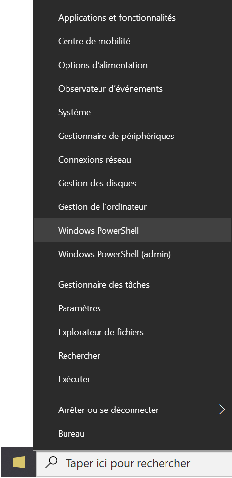
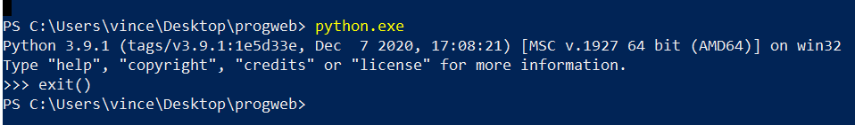

Internet, World Wide Web et HTTP |
Le but de ce premier TP est double :
- comprendre ce qu'est Internet, le Web et comment on peut interagir avec une machine distante à l'aide du plusieurs outils (clients) comme netcat (la commande nc) ou un navigateur Web (browser) ;
- créer sa première page web.
Le compte rendu de ce TP devra être déposé sur la plateforme de elearning d'ici au
samedi 29/01 à 22:00 au plus tard.
Cette semaine comme toutes celles qui suivront, il est fortement recommandé de
commencer par lire l'intégralité du sujet (ou au moins de l'exercice en cours)
avant de répondre au question : cela vous permettra de mieux comprendre là
où les exercices vont vous emmener !
Par ailleurs, si vous avez TP le jeudi ou le vendredi, il est aussi recommandé de lire les sujets de TP à la maison avant la séance, et de commencer à faire les questions jusqu'à ce que cela devienne difficile, pour être prêts à profiter de la présence de vos enseignants pendant la séance de TP !
Par ailleurs, si vous avez TP le jeudi ou le vendredi, il est aussi recommandé de lire les sujets de TP à la maison avant la séance, et de commencer à faire les questions jusqu'à ce que cela devienne difficile, pour être prêts à profiter de la présence de vos enseignants pendant la séance de TP !
Cette version du TP est spécialement adaptée aux élèves dont le système d'exploitation
est Windows. Une autre version
est disponible si votre ordinateur utilise le système d'exploitation
Linux ou
Mac OS.
Exercice 0 : On sort un papier et un crayon
C'est certes facile, mais tous les ans, certains élèves n'y parviennent pas…
Exercice 1 : On commence tranquillement !
Dans un premier temps, vous allez créer un espace sur votre compte où
vous stockerez les TPs ainsi que les comptes rendus correspondants.
Bien sûr, pas de clickodrome, vous êtes grands, donc vous allez utiliser un terminal pour organiser les données.
Bien sûr, pas de clickodrome, vous êtes grands, donc vous allez utiliser un terminal pour organiser les données.
- Ouvrez un terminal en faisant un clic droit sur la fenêtre "Windows"
puis en sélectionnant l'onglet "Windows PowerShell", comme indiqué
ci-dessous.

Créez ensuite un répertoire "progweb" dans votre répertoire personnel (home directory) ou dans le bureau (Desktop).
Rappel : la commande mkdir permet de créer un répertoire et cd permet de se déplacer dans les répertoires. - Créez à l'intérieur du répertoire "progweb" un répertoire tp1.
- À l'intérieur du répertoire "tp1", lancez la commande suivante
notepad compte-rendu-tp1.txt
Ce fichier vous servira de compte rendu de TP. - Un compte rendu consiste à expliquer ce que vous avez fait pour
traiter chaque question (une phrase par question est souvent
suffisante).
Complétez le compte rendu avec une explication de tout ce que vous avez fait depuis le début du TP.
Pour chaque TP de programmation Web, nous vous demanderons de rédiger
un compte rendu au fur et à mesure que vous faites le TP. Si vous ne
finissez pas un TP lors d'une séance, il vous est demandé de le finir
par vous-même et de le déposer sur la page elearning du cours.
Chaque compte rendu devra être écrit en HTML. C'est d'ailleurs le sujet de l'exercice 2.
Chaque compte rendu devra être écrit en HTML. C'est d'ailleurs le sujet de l'exercice 2.
Exercice 2 : Document HTML de base
- Recopiez dans votre fichier de compte rendu le squelette de
document HTML suivant :
<!DOCTYPE html> <html> <head> <title>Compte rendu de TP1</title> </head> <body> <h1>Compte rendu de TP1</h1> <p> Votre nom ici ! </p> <h2>Exercice 0 : On sort un papier et un crayon</h2> <p> Voilà, c'est fait ! </p> <h2>Exercice 1 : On commence tranquillement !</h2> <p> … </p> <h2>Exercice 2 : Document HTML de base</h2> <h3>À quoi servent les tags h1, h2 et h3 ?</h3> <p> … </p> <h3>À quoi sert le tag p ?</h3> <p> … </p> </body> </html>
Remplacez ensuite "Votre nom ici !" par votre nom.
Utilisez un navigateur Web pour afficher le résultat
Si le résultat ne s'affiche pas correctement (entre autres l'accent de "À quoi sert le tag p ?"), que manque-t-il comme information à la balise head pour que le fichier s'affiche correctement ?
Le résultat devrait ressembler à ceci, mais avec des informations supplémentaires. - À quoi servent les tags h1, h2 et h3 ?
- À quoi sert le tag p ?
- Remplacez les … des sections "Exercice 1" et "Exercice 2" par le texte que vous aviez écrit à ces deux exercices.
Dans la suite, nous vous demandons d'ajouter de nouvelles
sections (une par exercice du TP) et de compléter votre compte rendu.
Exercice 3 : Uniform Resource Locator
On cherche à savoir où est hébergée une page d'actualités sportives.
- Ouvrez un navigateur Web et allez à l'URL suivante:
http://www.w3.org/standards/
Quel est le nom de la machine à laquelle vous accédez ?
Quel est le nom de domaine auquel vous accédez ? - Si l'on exécute
nslookup w3.org
À quoi correspond la première ligne de la réponse ?
À quoi correspond la deuxième ligne de la réponse ? - Dans le navigateur Web, dans la barre contenant l'URL,
remplacez le nom de la machine par son adresse IP pour vérifier que
cela fonctionne toujours.
À votre avis, pourquoi utilise-t-on des noms pour les machines plutôt que des adresses IP ? - Exécutez la commande tracert sur
cette adresse IP.
Qu'affiche cette commande ?
Comment s'appelle le réseau sur lequel est connectée l'université (ou votre domicile) ?
Quels sont les autres réseaux qui sont traversés ? -
Actualité du jour : le cours de programmation web a commencé !
Pour le découvrir, on souhaite consulter la page
https://vincentjuge1987.github.io/.
Utiliser la commande nslookup pour récupérer l'adresse IP correspondant à cette machine. - On cherche maintenant à voir l'ancienne version du cours, que donnait
Rémi Forax au printemps 2019. Pour ce faire, on souhaite consulter
la page https://forax.github.io/course/progweb/.
Utiliser la commande nslookup pour récupérer l'adresse IP correspondant à cette machine.
Que se passe-t-il si on essaye d'accéder cette page dans le navigateur en remplaçant le nom de la machine par l'adresse IP trouvée précédemment ?
Et si on remplaçait forax.github.io par vincentjuge1987.github.io au début de l'URL ? Expliquer pourquoi.
Exercice 4 : Service HTTP
On a vu en cours comment utiliser netcat (commande nc suivie de l'option
-C pour éviter les problèmes d'encodage) pour appeler un
service sur une machine distante. Nous allons pouvoir utiliser la même
technique pour interroger un serveur Web.
- Téléchargez le script python netcat.py pour Windows et enregistrez-le dans votre répertoire progweb.
- Vérifiez que vous disposez bien d'un utilitaire python utilisable
en ligne de commande. Pour cela, il suffit de taper python.exe.
Normalement, soit Windows vous proposera de télécharger python
(et alors il faut le faire), soit vous verrez quelque chose comme :

Dans second ce cas, écrivez simplement exit() puis revenez à la ligne. - On souhaite utiliser netcat pour se connecter au
serveur Web de la machine monge.univ-mlv.fr. Sous Windows, la commande à utiliser
est python.exe netcat.py -C NOM-DE-MACHINE PORT, où NOM-DE-MACHINE est
le nom de la machine à laquelle on souhaite se connecter, et PORT est le port correspondant
au protocole HTTP.
Quel est ce numéro de port ? - Utiliser netcat pour vous connecter à la machine
serveur Web de la machine monge.univ-mlv.fr en
utilisant le port TCP correspondant au protocole HTTP puis tapez la
requête suivante et appuyez deux fois sur "Entrée" :
GET /ens/ HTTP/1.0
Quel est le port TCP correspondant au protocole HTTP ?
Quel est le header (l'en-tête, en français) de la réponse ?
Note : le serveur envoie une réponse composée de deux parties, séparées par une ligne vide :- le header, qui est ce qui nous intéresse pour le moment,
- une page HTML, à laquelle nous nous intéresserons plus tard.
- À quoi correspondent les 3 valeurs sur la première ligne de l'en-tête ?
- Quel est le nom du serveur Web ?
- À quoi correspond la valeur de Content-Type ?
- À quoi correspond la valeur de Content-Length ?
- Faites la même analyse mais avec la requête
GET /ens/toto.txt HTTP/1.0
- Enfin, faites la même analyse avec la requête
GET /index.html HTTP/1.0
À quoi correspond la valeur de Location ? -
Que se passe-t-il lorsque je lance la commande wget monge.univ-mlv.fr/index.html ?
Expliquer la signification des lignes qui apparaissent sur la ligne de commande.